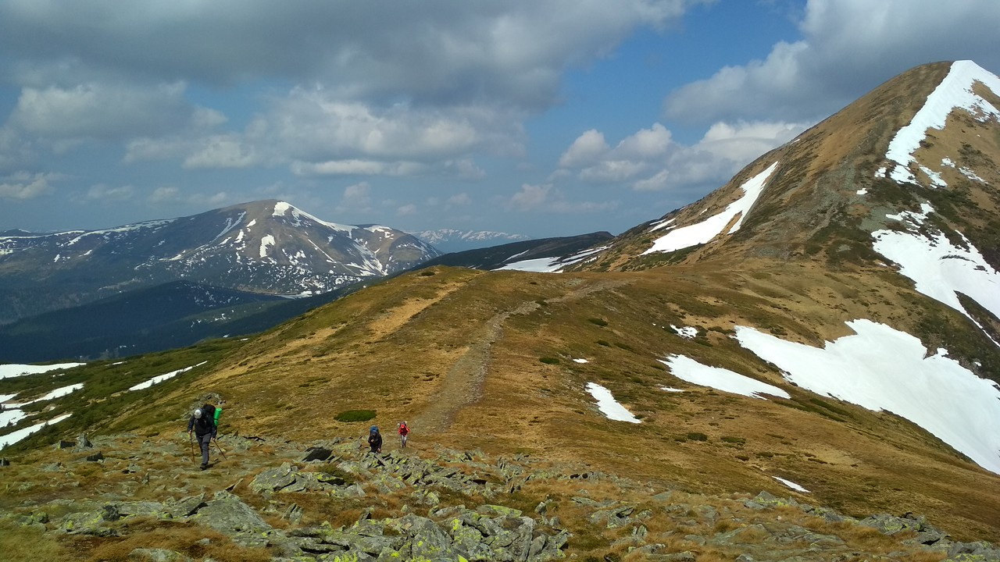
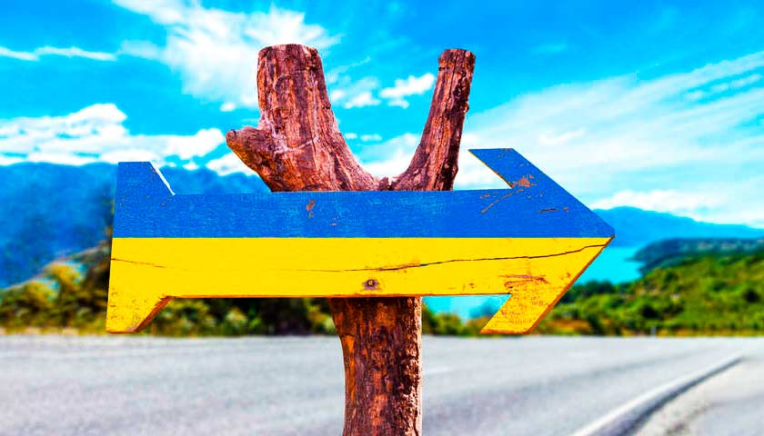

Популярний об'єкт літнього та зимового туризму. Перший туристичний маршрут зі сходження на вершину був відкритий у 1880 році. Узимку альпіністським сходженням на Говерлу присвоєна категорія 1Б.
У кінці березня щорічно, починаючи з 1964 року, відбувається «Говерляна» — традиційний масовий похід-сходження на г. Говерлу, який присвячується відкриттю спортивного літнього сезону на Львівщині й пам'яті загиблих товаришів-альпіністів і туристів. Сходження здійснюється за маршрутом: зі сторони селища Ворохта Івано-Франківської області ущелиною річки Прут — через Карпатський національний природний парк та урочище «Заросляк». Організатори походу — Управління фізичної культури та спорту Львівської обласної державної адміністрації, Федерація спортивного туризму України, Львівська обласна федерація спортивного туризму за активної участі Львівського туристично-альпіністського центру «Скеля»[7].
1967 року ЦК ЛКСМУ організував підйом на Говерлу на честь 50-річчя Жовтневої революції в Росії і випустив бронзовий знак з зображенням обрисів гори і геодезичного знаку на її вершині.
1989 року на день народження Тараса Шевченка ентузіасти піднялись на Говерлу. Випущений бронзовий знак із засніженими вершинами Говерли і портретом молодого національного героя..
З 16 липня 1990 року на честь прийняття Декларації про незалежність України група ентузіастів НародногоРуху України щороку в цей день піднімається на Говерлу зі сторони Заросляка з долини річки Лозещина і встановлює прапор України на геодезичному знаку..
Щороку польські націоналісти організовують походи на Говерлу і відновлюють прикордонні знаки із зображеннм польського герба…
Через популярність має високий рівень засміченості привершинної ділянки, а також знищений рослинний покрив на вершині[джерело?]. Говерла «потерпає від масових сходжень, після яких у горах залишаються безліч сміття і гектари витоптаних високогірних лугів»[8]. За розрахунками фахівців[хто?], екологічне навантаження на Говерлу не має перевищувати 200 осіб на добу[8].
Подорожуй Україною!
